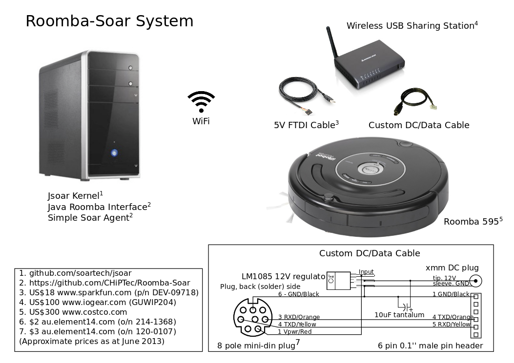

Roomba-Soar
Control an iRobot Roomba 595 with a Soar agent running under a Jsoar kernel.
The kernel and a Roomba interface layer run under Java on a host machine. The host might be a netbook mounted on the Roomba, or as in the photograph below, a desktop connected via WiFi.

To demonstrate the system, a trivial obstacle avoiding agent has been developed (video).
Hardware Requirements
The hardware requirements, along with approximate costs, are shown in the system diagram.

Note that for a system with the host mounted on the Roomba (e.g. using a netbook), the Wireless USB Sharing Station is not required and the host is connected directly to the Roomba via the FTDI Cable and Custom Data Cable.
Software
The software, including the latest version of the Roomba interface layer, is provided in the TableCircumnavigator (obstacle avoiding) example. A brief overview is provided below. More details can be found in the Javadoc.
The RoombaIF abstract base class provides methods to open and close a connection to the Roomba and a mechanism to request the Roomba stream any subset of its sensor data. (The sensors are described in the iRobot Roomba 500 Open Interface (OI) Specification). Methods to issue motor commands are available and it should be straightforward to add new methods for other commands.
Two implementations of the RoombaIF class are included: one that uses the Java Simple Serial Connector to establish a connection with an actual Roomba; and one that demonstrates a trivial simulated Roomba.
TableCircumnavigator.java demonstates how to use JSoar SoarBeans to receive output commands from the agent's I/O link and JSoar Quick Input to send sensor data to the I/O link.
The TableCircumnavigator Soar agent merely moves the Roomba forward slowly until it is obstructed, pivots clockwise until the obstruction is cleared, and continues moving forwards.